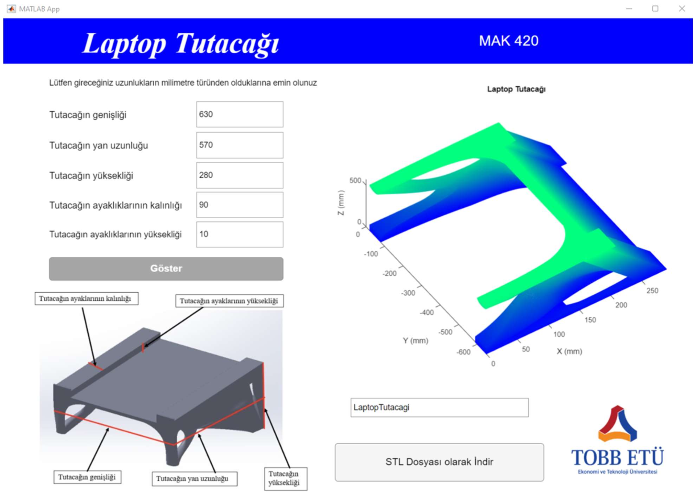

Project Overview
This project presents a MATLAB App for designing a customizable laptop stand for users who connect external monitors, keyboards, cable accessories, or cooling equipment to a laptop. Instead of producing one fixed geometry, the work combines structural optimization and parametric modeling so the stand can be adapted to different laptop sizes and user requirements.
The workflow starts with a topology optimization study for a 16-inch laptop stand. The optimized load-bearing skeleton is then used as a reference for a Bezier-surface solid model. The MATLAB App lets the user enter stand dimensions, preview the generated model, and export the final design as an STL file ready for 3D printing. The demo video below is in Turkish and shows how the application works step by step.
Design Method
The project uses a topology optimization code derived from a MATLAB topology optimization implementation and later 3D modifications. A grid-based finite element model was prepared for the stand, with mesh size selected to keep MATLAB runtime practical. The optimization used fixed supports around the four stand feet, distributed loading on the inclined laptop support surface, additional loads where laptop feet would contact the stand, and an outward load near the front lip to guide the anti-slip edge. The resulting geometry is then connected to the MATLAB App so users can create different stand sizes through a simple interface.
- Reference size — optimization parameters were chosen around a 16-inch laptop stand layout
- Meshing — the design domain was converted into grid nodes and mesh elements for finite element analysis
- Boundary conditions — support points, laptop-contact forces, inclined surface loading, and front-lip loading shaped the result
- Iteration tuning — the maximum iteration count was set to 60 after trials to balance shape quality and surface stability
- Bezier surfaces — the optimized topology was rebuilt with bicubic Bezier surface patches
- Surface continuity — G0, G1, and C1 continuity were used where needed to connect neighboring patches cleanly
- Parametric scale — control point coordinates are scaled from user-entered stand dimensions
- Manufacturing output — the MATLAB App exports the generated laptop stand as an STL file